2026 Higher Physics - Paper 2 questions
Source: Scottish Qualifications Authority (SQA) / Qualifications Scotland. This is a StemInteract HTML companion, not an official HTML edition. Selectable text is supplied alongside original page images. Use the images or original PDF for equations, powers, fractions, vector notation, tables and diagrams; text extraction cannot fully preserve mathematical layout.
Jump to a question
PDF page 1
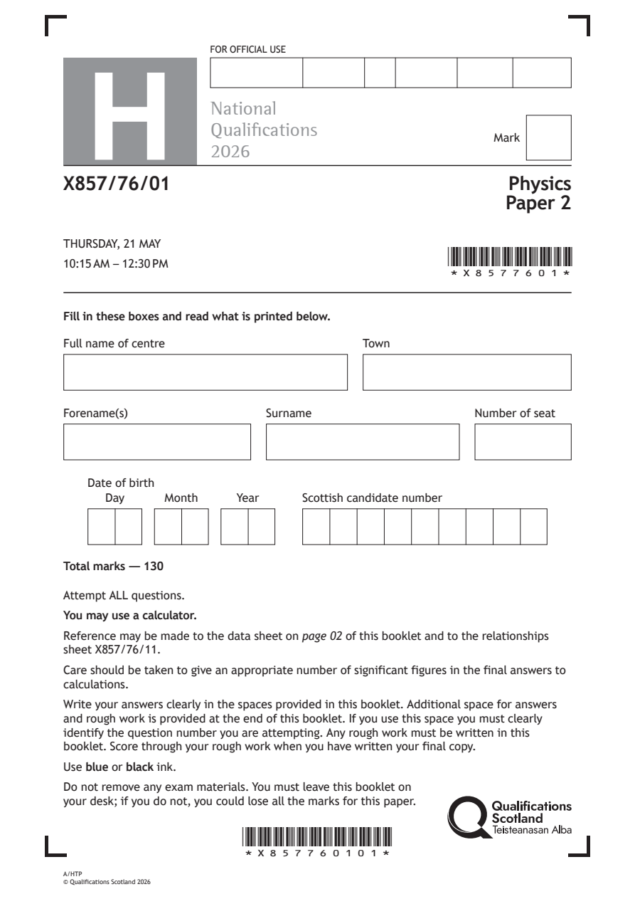
Selectable page text
FOR OFFICIAL USE
H
National
Qualications
Mark
2026
X857/76/01 Physics
Paper 2
THURSDAY, 21 MAY
10:15 AM – 12:30 PM
*X8577601*
Fill in these boxes and read what is printed below.
Full name of centre Town
Forename(s) Surname Number of seat
Date of birth
Day Month Year Scottish candidate number
Total marks — 130
Attempt ALL questions.
You may use a calculator.
Reference may be made to the data sheet on page 02 of this booklet and to the relationships
sheet X857/76/11.
Care should be taken to give an appropriate number of significant figures in the final answers to
calculations.
Write your answers clearly in the spaces provided in this booklet. Additional space for answers
and rough work is provided at the end of this booklet. If you use this space you must clearly
identify the question number you are attempting. Any rough work must be written in this
booklet. Score through your rough work when you have written your final copy.
Use blue or black ink.
Do not remove any exam materials. You must leave this booklet on
your desk; if you do not, you could lose all the marks for this paper.
*X857760101*
A/HTP
© Qualifications Scotland 2026PDF page 2

Selectable page text
DATA SHEET
COMMON PHYSICAL QUANTITIES
Quantity Symbol Value Quantity Symbol Value
Speed of light in
vacuum c 3.00 × 10⁸ m s⁻¹ Planck’s constant h 6.63 × 10⁻³⁴ J s
Magnitude of the
charge on an electron e 1.60 × 10⁻¹⁹ C Mass of electron mₑ 9.11 × 10⁻³¹ kg
Universal Constant of
Gravitation G 6.67 × 10⁻¹¹ m³ kg⁻¹ s⁻² Mass of neutron mₙ 1.675 × 10⁻²⁷ kg
Gravitational
acceleration on Earth g 9.8 m s⁻² Mass of proton mₚ 1.673 × 10⁻²⁷ kg
Speed of sound in
Hubble’s constant H₀ 2.3 × 10⁻¹⁸ s⁻¹ air vₐᵢᵣ 3.40 × 10² m s⁻¹
REFRACTIVE INDICES
The refractive indices refer to sodium light of wavelength 589 nm and to substances at a temperature of 273 K.
Substance Refractive index Substance Refractive index
Diamond 2.42 Water 1.33
Crown glass 1.50 Air 1.00
SPECTRAL LINES
Element Wavelength (nm) Colour Element Wavelength (nm) Colour
Hydrogen 656 Red Cadmium 644 Red
486 Blue‑green 509 Green
434 Blue‑violet 480 Blue
410 Violet
Lasers
397 Ultraviolet
389 Ultraviolet Element Wavelength (nm) Colour
Carbon dioxide 9550} Infrared
Sodium 589 Yellow 10 590
Helium‑neon 633 Red
PROPERTIES OF SELECTED MATERIALS
Substance Density (kg m⁻³) Melting point (K) Boiling point (K)
Aluminium 2.70 × 10³ 933 2623
Copper 8.96 × 10³ 1357 2853
Ice 9.20 × 10² 273 . . . .
Sea Water 1.02 × 10³ 264 377
Water 1.00 × 10³ 273 373
Air 1.29 . . . . . . . .
Hydrogen 9.0 × 10⁻² 14 20
The gas densities refer to a temperature of 273 K and a pressure of 1.01 × 10⁵ Pa.
*X857760102*
page 02PDF page 3
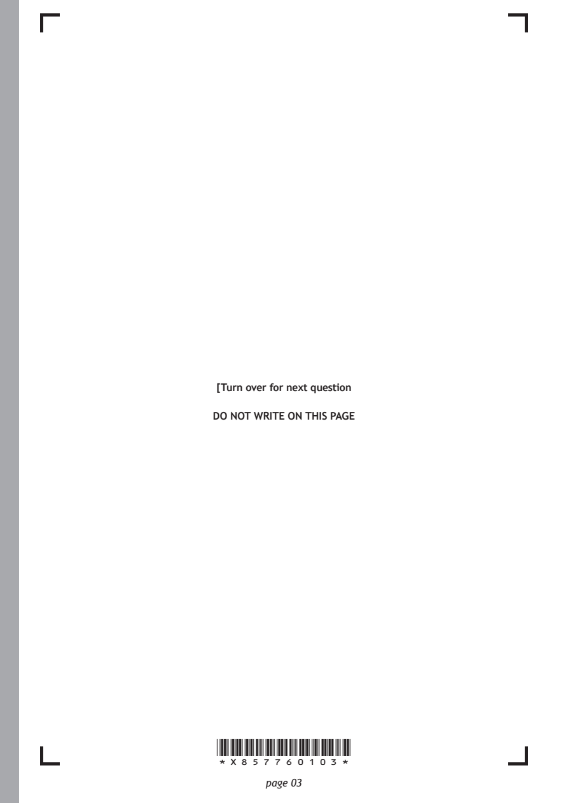
Selectable page text
[Turn over for next question
DO NOT WRITE ON THIS PAGE
*X857760103*
page 03PDF page 4
Paper 2, Question 1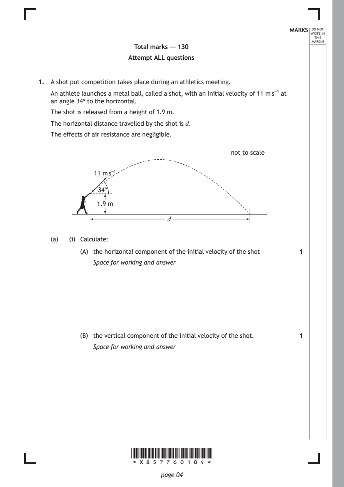
Selectable page text
MARKS _{W}^{D}_{R}^{O}_{I} _{T}^{N}OT
E IN
THIS
MARGIN
Total marks — 130
Attempt ALL questions
1. A shot put competition takes place during an athletics meeting.
An athlete launches a metal ball, called a shot, with an initial velocity of 11 m s⁻¹ at
an angle 34° to the horizontal.
The shot is released from a height of 1.9 m.
The horizontal distance travelled by the shot is d.
The effects of air resistance are negligible.
not to scale
11 m s⁻¹
34°
1.9 m
d
(a) (i) Calculate:
(A) the horizontal component of the initial velocity of the shot 1
Space for working and answer
(B) the vertical component of the initial velocity of the shot. 1
Space for working and answer
*X857760104*
page 04PDF page 5
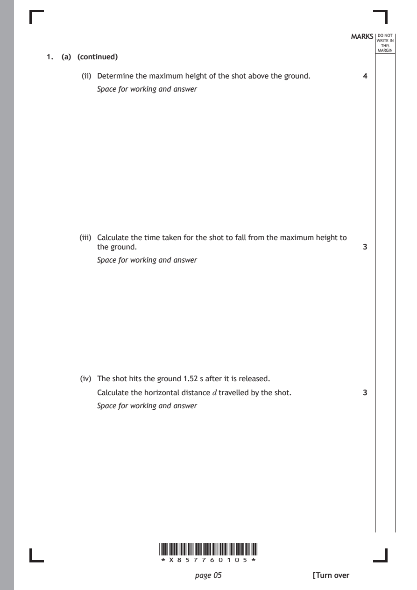
Selectable page text
MARKS _{W}^{D}_{R}^{O}_{I} _{T}^{N}OT
E IN
THIS
MARGIN
1. (a) (continued)
(ii) Determine the maximum height of the shot above the ground. 4
Space for working and answer
(iii) Calculate the time taken for the shot to fall from the maximum height to
the ground. 3
Space for working and answer
(iv) The shot hits the ground 1.52 s after it is released.
Calculate the horizontal distance d travelled by the shot. 3
Space for working and answer
*X857760105*
page 05 [Turn overPDF page 6
Selectable page text
MARKS _{W}^{D}_{R}^{O}_{I} _{T}^{N}OT
E IN
THIS
MARGIN
1. (continued)
(b) A second, taller athlete releases the shot at a height of 2.2 m.
The initial speed and angle of launch of the shot are unchanged.
State what effect, if any, this has on the horizontal distance d travelled by the
shot.
You must justify your answer. 2
*X857760106*
page 06PDF page 7
Selectable page text
[Turn over for next question
DO NOT WRITE ON THIS PAGE
*X857760107*
page 07PDF page 8
Paper 2, Question 2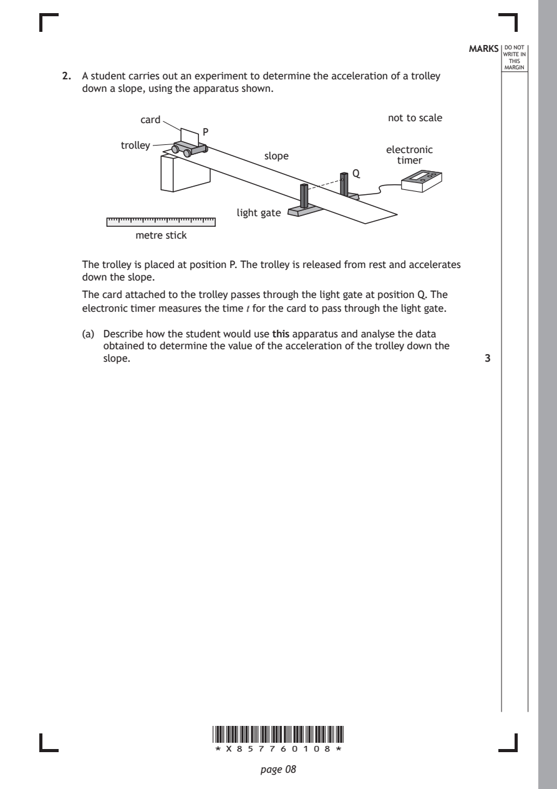
Selectable page text
MARKS _{W}^{D}_{R}^{O}_{I} _{T}^{N}OT
E IN
THIS
MARGIN
2. A student carries out an experiment to determine the acceleration of a trolley
down a slope, using the apparatus shown.
card not to scale
P
trolley
electronic
slope
timer
Q
light gate
metre stick
The trolley is placed at position P. The trolley is released from rest and accelerates
down the slope.
The card attached to the trolley passes through the light gate at position Q. The
electronic timer measures the time t for the card to pass through the light gate.
(a) Describe how the student would use this apparatus and analyse the data
obtained to determine the value of the acceleration of the trolley down the
slope. 3
*X857760108*
page 08PDF page 9
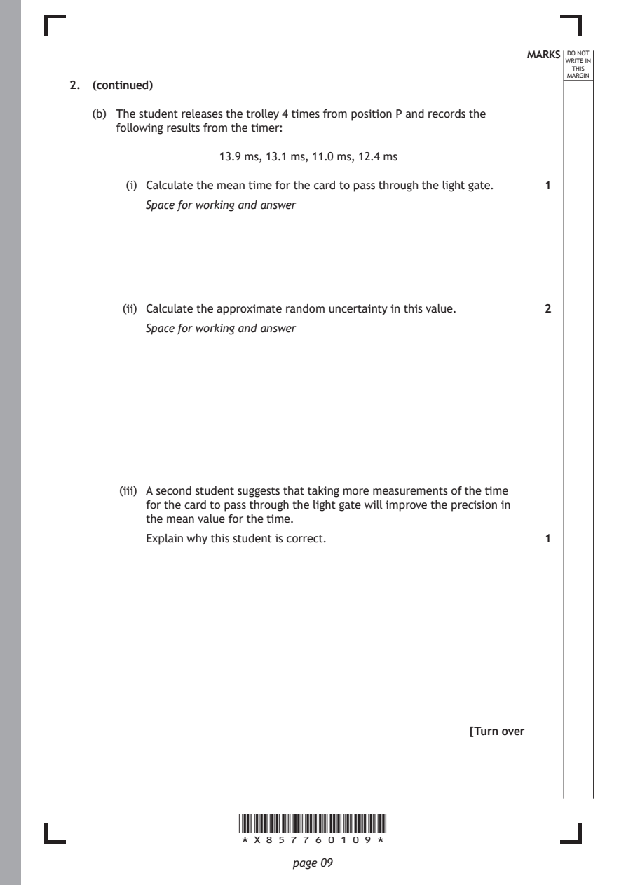
Selectable page text
MARKS _{W}^{D}_{R}^{O}_{I} _{T}^{N}OT
E IN
THIS
MARGIN
2. (continued)
(b) The student releases the trolley 4 times from position P and records the
following results from the timer:
13.9 ms, 13.1 ms, 11.0 ms, 12.4 ms
(i) Calculate the mean time for the card to pass through the light gate. 1
Space for working and answer
(ii) Calculate the approximate random uncertainty in this value. 2
Space for working and answer
(iii) A second student suggests that taking more measurements of the time
for the card to pass through the light gate will improve the precision in
the mean value for the time.
Explain why this student is correct. 1
[Turn over
*X857760109*
page 09PDF page 10
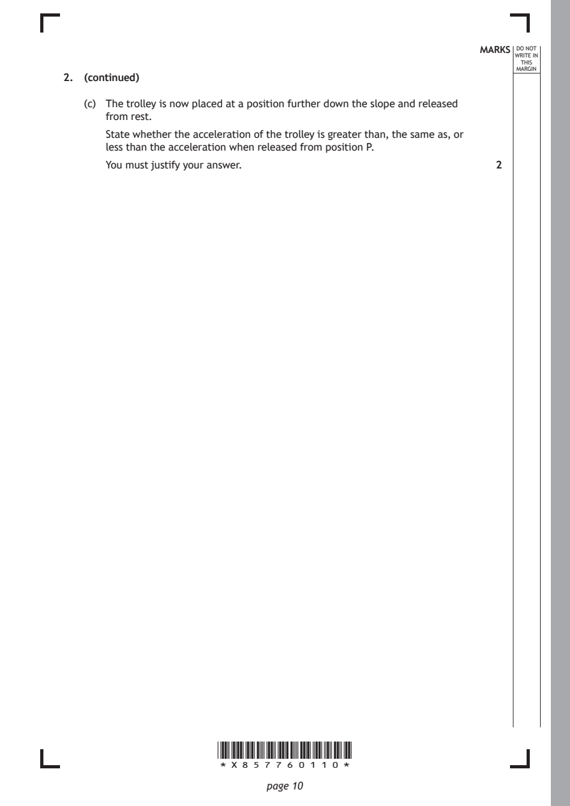
Selectable page text
MARKS _{W}^{D}_{R}^{O}_{I} _{T}^{N}OT
E IN
THIS
MARGIN
2. (continued)
(c) The trolley is now placed at a position further down the slope and released
from rest.
State whether the acceleration of the trolley is greater than, the same as, or
less than the acceleration when released from position P.
You must justify your answer. 2
*X857760110*
page 10PDF page 11

Selectable page text
[Turn over for next question
DO NOT WRITE ON THIS PAGE
*X857760111*
page 11PDF page 12
Paper 2, Question 3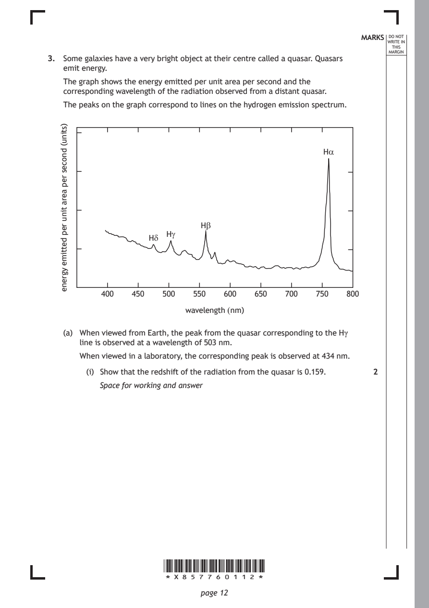
Selectable page text
MARKS _{W}^{D}_{R}^{O}_{I} _{T}^{N}OT
E IN
THIS
MARGIN
3. Some galaxies have a very bright object at their centre called a quasar. Quasars
emit energy.
The graph shows the energy emitted per unit area per second and the
corresponding wavelength of the radiation observed from a distant quasar.
The peaks on the graph correspond to lines on the hydrogen emission spectrum.
400
*X857760112*
page 12
)stinu(
dnoces
rep
aera
tinu
rep
dettime
ygrene
Hα
Hβ
Hγ
Hδ
450 500 550 600 650 700 750 800
wavelength (nm)
(a) When viewed from Earth, the peak from the quasar corresponding to the Hγ
line is observed at a wavelength of 503 nm.
When viewed in a laboratory, the corresponding peak is observed at 434 nm.
(i) Show that the redshift of the radiation from the quasar is 0.159. 2
Space for working and answerPDF page 13
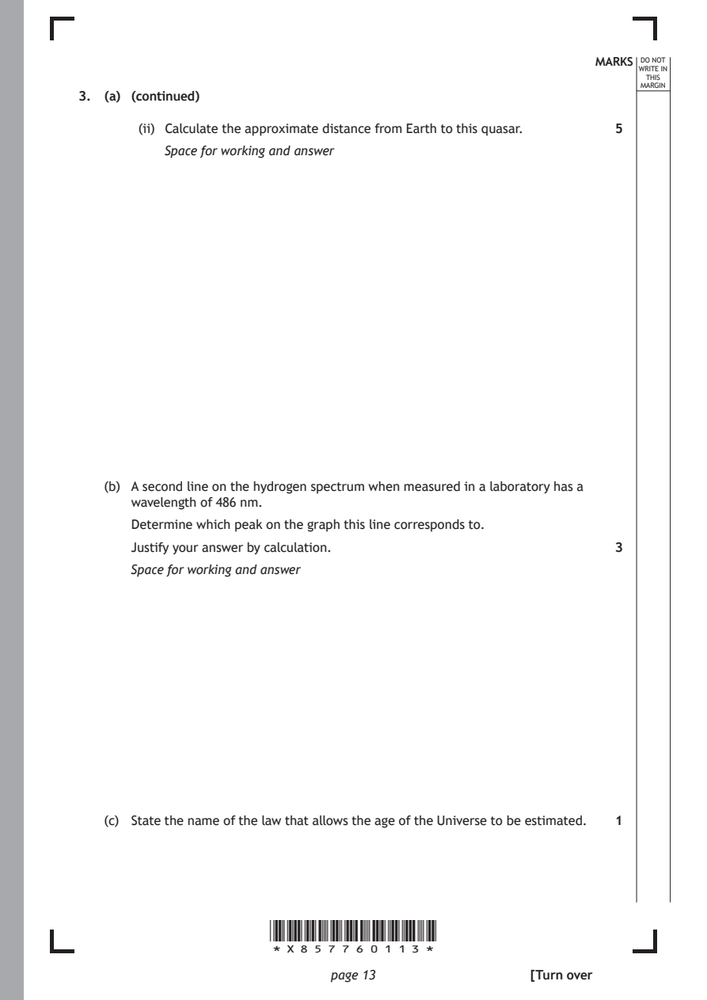
Selectable page text
MARKS _{W}^{D}_{R}^{O}_{I} _{T}^{N}OT
E IN
THIS
MARGIN
3. (a) (continued)
(ii) Calculate the approximate distance from Earth to this quasar. 5
Space for working and answer
(b) A second line on the hydrogen spectrum when measured in a laboratory has a
wavelength of 486 nm.
Determine which peak on the graph this line corresponds to.
Justify your answer by calculation. 3
Space for working and answer
(c) State the name of the law that allows the age of the Universe to be estimated. 1
*X857760113*
page 13 [Turn overPDF page 14
Paper 2, Question 4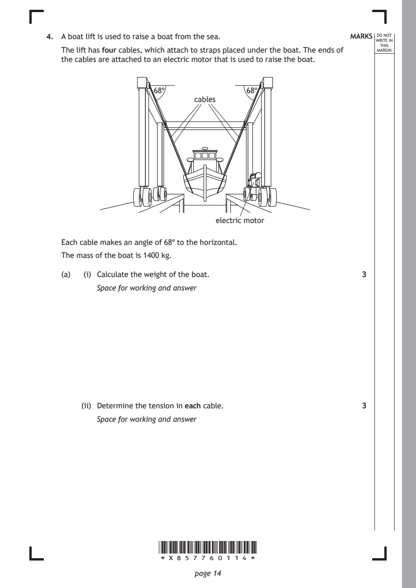
Selectable page text
4. A boat lift is used to raise a boat from the sea. MARKS _{W}^{D}_{R}^{O}_{I} _{T}^{N}OT
E IN
THIS
The lift has four cables, which attach to straps placed under the boat. The ends of MARGIN
the cables are attached to an electric motor that is used to raise the boat.
68° 68°
cables
electric motor
Each cable makes an angle of 68° to the horizontal.
The mass of the boat is 1400 kg.
(a) (i) Calculate the weight of the boat. 3
Space for working and answer
(ii) Determine the tension in each cable. 3
Space for working and answer
*X857760114*
page 14PDF page 15
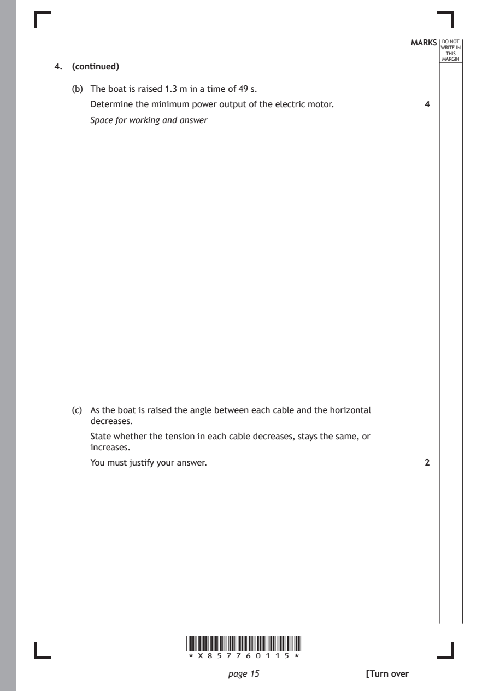
Selectable page text
MARKS _{W}^{D}_{R}^{O}_{I} _{T}^{N}OT
E IN
THIS
MARGIN
4. (continued)
(b) The boat is raised 1.3 m in a time of 49 s.
Determine the minimum power output of the electric motor. 4
Space for working and answer
(c) As the boat is raised the angle between each cable and the horizontal
decreases.
State whether the tension in each cable decreases, stays the same, or
increases.
You must justify your answer. 2
*X857760115*
page 15 [Turn overPDF page 16
Paper 2, Question 5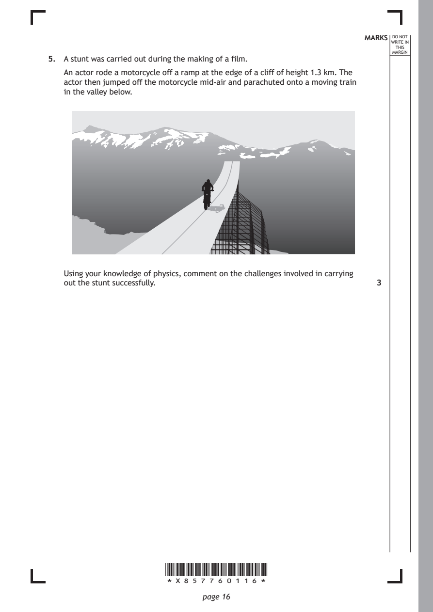
Selectable page text
MARKS _{W}^{D}_{R}^{O}_{I} _{T}^{N}OT
E IN
THIS
MARGIN
5. A stunt was carried out during the making of a film.
An actor rode a motorcycle off a ramp at the edge of a cliff of height 1.3 km. The
actor then jumped off the motorcycle mid‑air and parachuted onto a moving train
in the valley below.
Using your knowledge of physics, comment on the challenges involved in carrying
out the stunt successfully. 3
*X857760116*
page 16PDF page 17
Selectable page text
DO NOT
WRITE IN
THIS
MARGIN
5. (continued)
[Turn over
*X857760117*
page 17PDF page 18
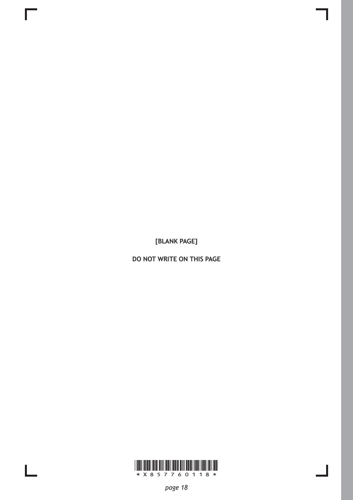
Selectable page text
[BLANK PAGE]
DO NOT WRITE ON THIS PAGE
*X857760118*
page 18PDF page 19
Paper 2, Question 6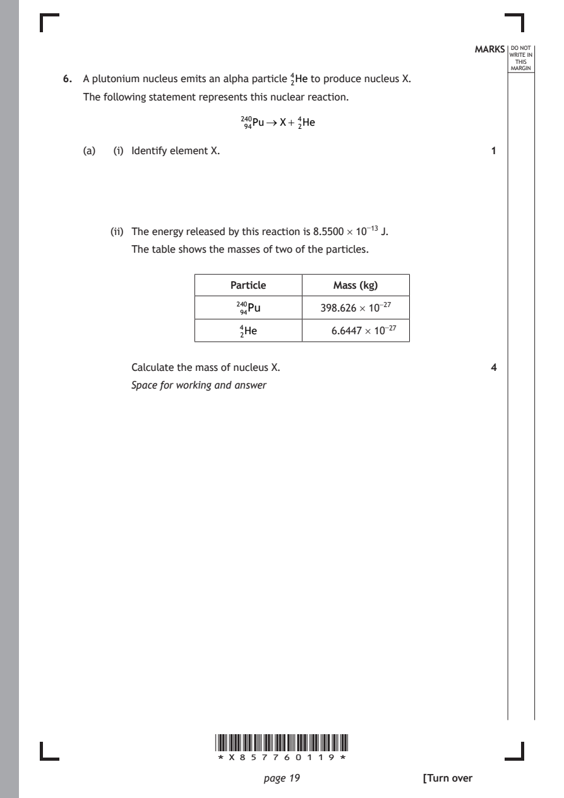
Selectable page text
MARKS _{W}^{D}_{R}^{O}_{I} _{T}^{N}OT
E IN
THIS
MARGIN
6. A plutonium nucleus emits an alpha particle ⁴₂He to produce nucleus X.
The following statement represents this nuclear reaction.
240PuX+ ⁴₂He
94
(a) (i) Identify element X. 1
(ii) The energy released by this reaction is 8.5500 × 10⁻¹³ J.
The table shows the masses of two of the particles.
Particle Mass (kg)
240Pu 398.626 × 10⁻²⁷
94
4He 6.6447 × 10⁻²⁷
2
Calculate the mass of nucleus X. 4
Space for working and answer
*X857760119*
page 19 [Turn overPDF page 20
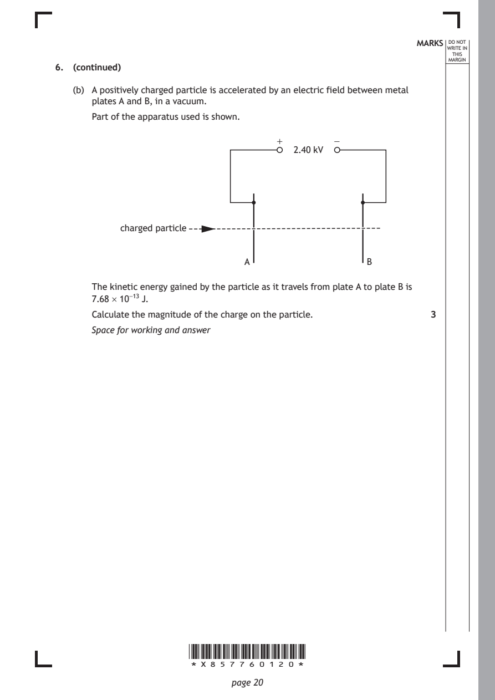
Selectable page text
MARKS _{W}^{D}_{R}^{O}_{I} _{T}^{N}OT
E IN
THIS
MARGIN
6. (continued)
(b) A positively charged particle is accelerated by an electric field between metal
plates A and B, in a vacuum.
Part of the apparatus used is shown.
_
+
2.40 kV
charged particle
A B
The kinetic energy gained by the particle as it travels from plate A to plate B is
7.68 × 10⁻¹³ J.
Calculate the magnitude of the charge on the particle. 3
Space for working and answer
*X857760120*
page 20PDF page 21
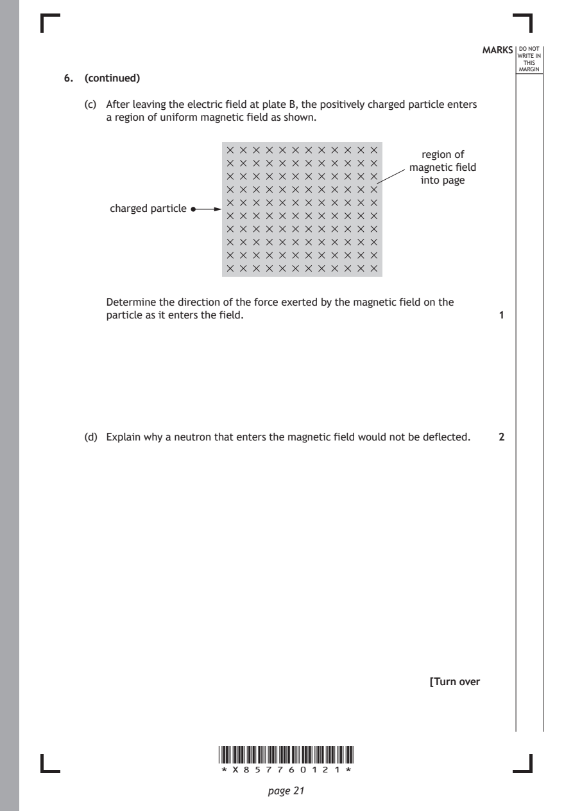
Selectable page text
MARKS _{W}^{D}_{R}^{O}_{I} _{T}^{N}OT
E IN
THIS
MARGIN
6. (continued)
(c) After leaving the electric field at plate B, the positively charged particle enters
a region of uniform magnetic field as shown.
region of
magnetic field
into page
charged particle
Determine the direction of the force exerted by the magnetic field on the
particle as it enters the field. 1
(d) Explain why a neutron that enters the magnetic field would not be deflected. 2
[Turn over
*X857760121*
page 21PDF page 22
Paper 2, Question 7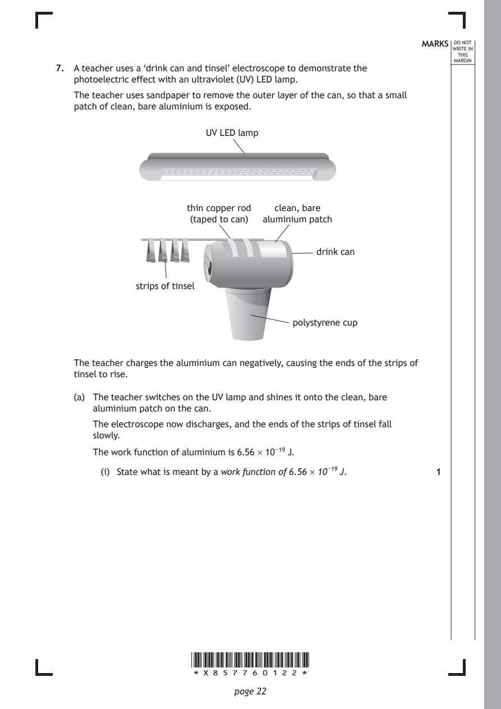
Selectable page text
MARKS _{W}^{D}_{R}^{O}_{I} _{T}^{N}OT
E IN
THIS
MARGIN
7. A teacher uses a ‘drink can and tinsel’ electroscope to demonstrate the
photoelectric effect with an ultraviolet (UV) LED lamp.
The teacher uses sandpaper to remove the outer layer of the can, so that a small
patch of clean, bare aluminium is exposed.
UV LED lamp
thin copper rod clean, bare
(taped to can) aluminium patch
drink can
strips of tinsel
polystyrene cup
The teacher charges the aluminium can negatively, causing the ends of the strips of
tinsel to rise.
(a) The teacher switches on the UV lamp and shines it onto the clean, bare
aluminium patch on the can.
The electroscope now discharges, and the ends of the strips of tinsel fall
slowly.
The work function of aluminium is 6.56 × 10⁻¹⁹ J.
(i) State what is meant by a work function of 6.56 × 10⁻¹⁹ J. 1
*X857760122*
page 22PDF page 23
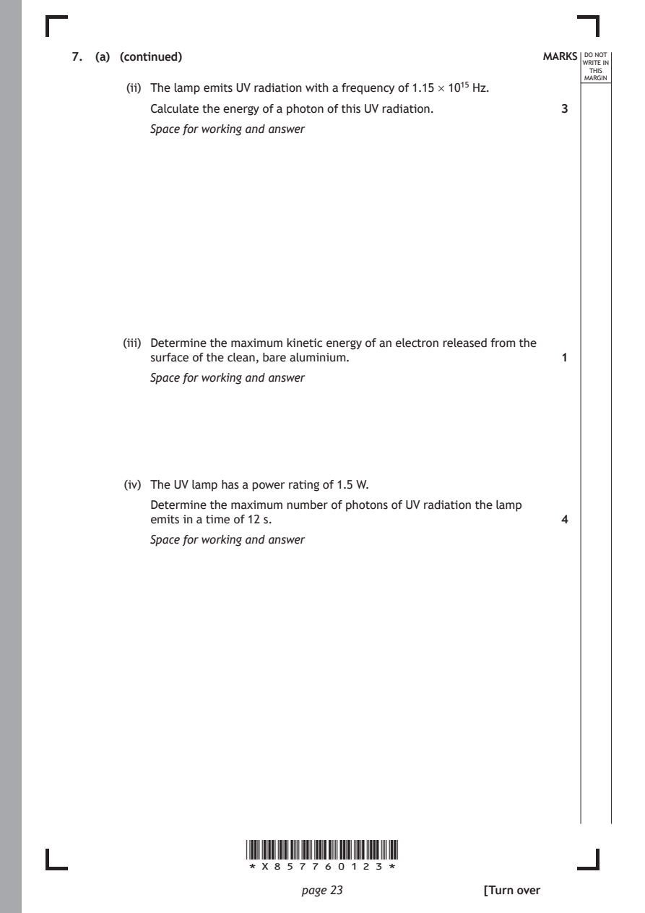
Selectable page text
7. (a) (continued) MARKS _{W}^{D}_{R}^{O}_{I} _{T}^{N}OT
E IN
THIS
MARGIN
(ii) The lamp emits UV radiation with a frequency of 1.15 × 10¹⁵ Hz.
Calculate the energy of a photon of this UV radiation. 3
Space for working and answer
(iii) Determine the maximum kinetic energy of an electron released from the
surface of the clean, bare aluminium. 1
Space for working and answer
(iv) The UV lamp has a power rating of 1.5 W.
Determine the maximum number of photons of UV radiation the lamp
emits in a time of 12 s. 4
Space for working and answer
*X857760123*
page 23 [Turn overPDF page 24
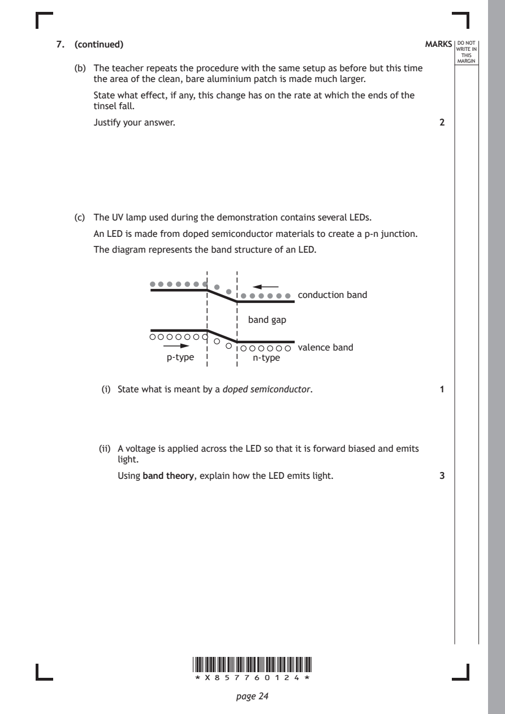
Selectable page text
7. (continued) MARKS _{W}^{D}_{R}^{O}_{I} _{T}^{N}OT
E IN
THIS
MARGIN
(b) The teacher repeats the procedure with the same setup as before but this time
the area of the clean, bare aluminium patch is made much larger.
State what effect, if any, this change has on the rate at which the ends of the
tinsel fall.
Justify your answer. 2
(c) The UV lamp used during the demonstration contains several LEDs.
An LED is made from doped semiconductor materials to create a p‑n junction.
The diagram represents the band structure of an LED.
conduction band
band gap
valence band
p-type n-type
(i) State what is meant by a doped semiconductor. 1
(ii) A voltage is applied across the LED so that it is forward biased and emits
light.
Using band theory, explain how the LED emits light. 3
*X857760124*
page 24PDF page 25
Paper 2, Question 8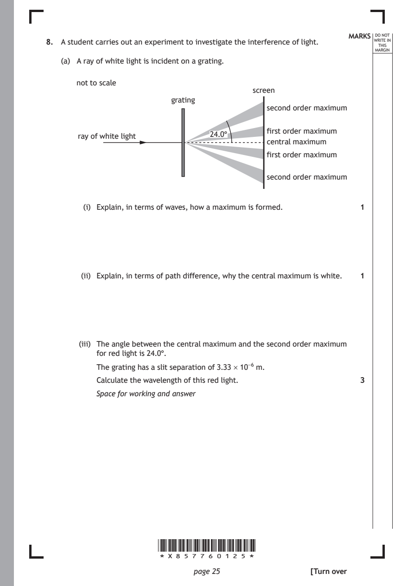
Selectable page text
MARKS _{W}^{D}_{R}^{O}_{I} _{T}^{N}OT
8. A student carries out an experiment to investigate the interference of light. E IN
THIS
MARGIN
(a) A ray of white light is incident on a grating.
not to scale
screen
grating
second order maximum
first order maximum
ray of white light 24.0°
central maximum
first order maximum
second order maximum
(i) Explain, in terms of waves, how a maximum is formed. 1
(ii) Explain, in terms of path difference, why the central maximum is white. 1
(iii) The angle between the central maximum and the second order maximum
for red light is 24.0°.
The grating has a slit separation of 3.33 × 10⁻⁶ m.
Calculate the wavelength of this red light. 3
Space for working and answer
*X857760125*
page 25 [Turn overPDF page 26
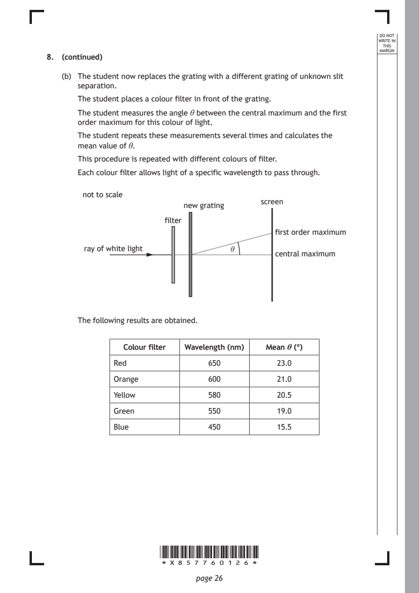
Selectable page text
DO NOT
WRITE IN
THIS
MARGIN
8. (continued)
(b) The student now replaces the grating with a different grating of unknown slit
separation.
The student places a colour filter in front of the grating.
The student measures the angle θ between the central maximum and the first
order maximum for this colour of light.
The student repeats these measurements several times and calculates the
mean value of θ.
This procedure is repeated with different colours of filter.
Each colour filter allows light of a specific wavelength to pass through.
not to scale
screen
new grating
filter
first order maximum
ray of white light θ
central maximum
The following results are obtained.
Colour filter Wavelength (nm) Mean θ (º)
Red 650 23.0
Orange 600 21.0
Yellow 580 20.5
Green 550 19.0
Blue 450 15.5
*X857760126*
page 26PDF page 27
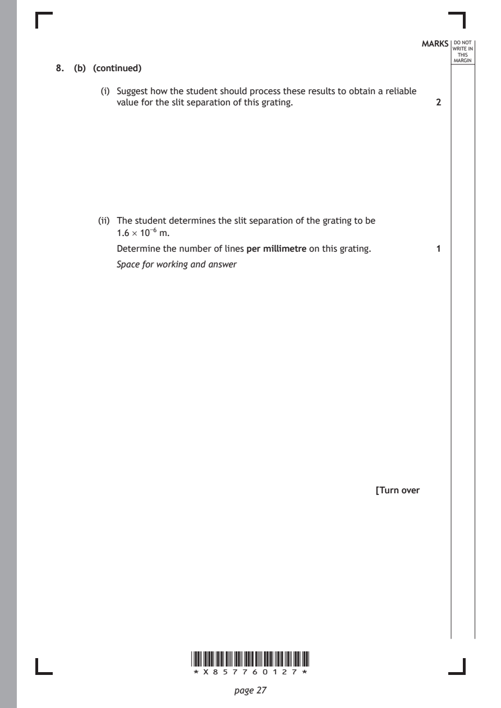
Selectable page text
MARKS _{W}^{D}_{R}^{O}_{I} _{T}^{N}OT
E IN
THIS
MARGIN
8. (b) (continued)
(i) Suggest how the student should process these results to obtain a reliable
value for the slit separation of this grating. 2
(ii) The student determines the slit separation of the grating to be
1.6 × 10⁻⁶ m.
Determine the number of lines per millimetre on this grating. 1
Space for working and answer
[Turn over
*X857760127*
page 27PDF page 28
Paper 2, Question 9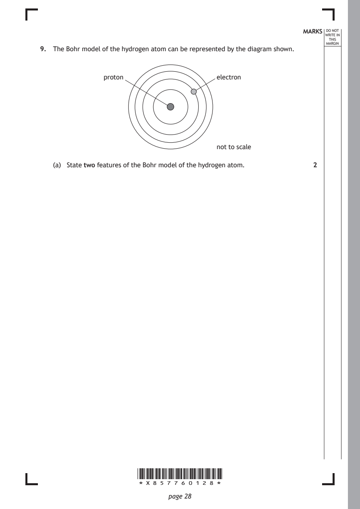
Selectable page text
MARKS _{W}^{D}_{R}^{O}_{I} _{T}^{N}OT
E IN
THIS
MARGIN
9. The Bohr model of the hydrogen atom can be represented by the diagram shown.
proton electron
not to scale
(a) State two features of the Bohr model of the hydrogen atom. 2
*X857760128*
page 28PDF page 29
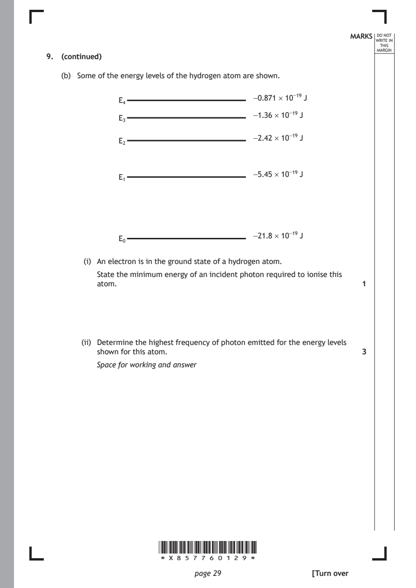
Selectable page text
MARKS _{W}^{D}_{R}^{O}_{I} _{T}^{N}OT
E IN
THIS
MARGIN
9. (continued)
(b) Some of the energy levels of the hydrogen atom are shown.
−0.871 × 10⁻¹⁹ J
E₄
−1.36 × 10⁻¹⁹ J
E₃
−2.42 × 10⁻¹⁹ J
E₂
−5.45 × 10⁻¹⁹ J
E₁
−21.8 × 10⁻¹⁹ J
E₀
(i) An electron is in the ground state of a hydrogen atom.
State the minimum energy of an incident photon required to ionise this
atom. 1
(ii) Determine the highest frequency of photon emitted for the energy levels
shown for this atom. 3
Space for working and answer
*X857760129*
page 29 [Turn overPDF page 30
Paper 2, Question 10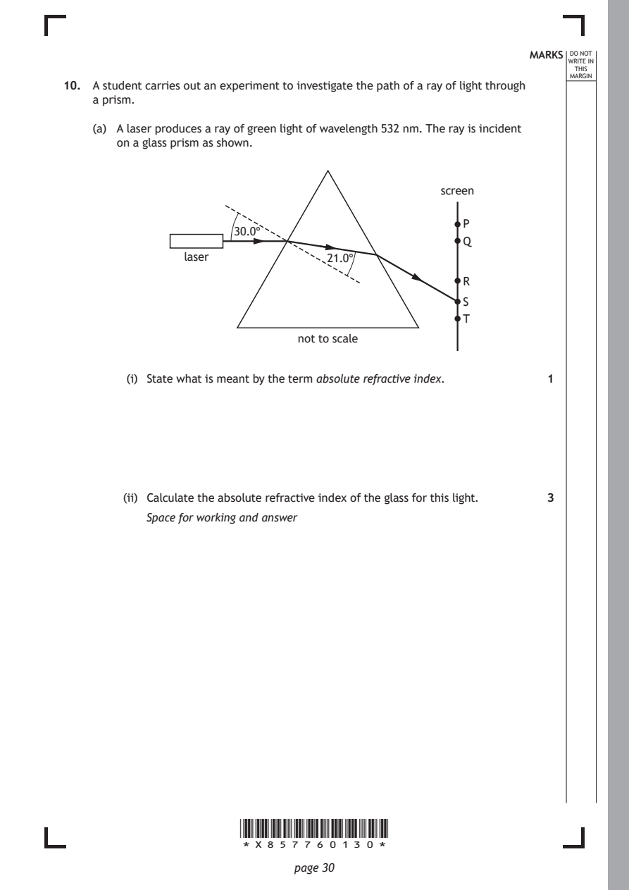
Selectable page text
MARKS _{W}^{D}_{R}^{O}_{I} _{T}^{N}OT
E IN
THIS
MARGIN
10. A student carries out an experiment to investigate the path of a ray of light through
a prism.
(a) A laser produces a ray of green light of wavelength 532 nm. The ray is incident
on a glass prism as shown.
screen
P
30.0°
Q
laser 21.0°
R
S
T
not to scale
(i) State what is meant by the term absolute refractive index. 1
(ii) Calculate the absolute refractive index of the glass for this light. 3
Space for working and answer
*X857760130*
page 30PDF page 31
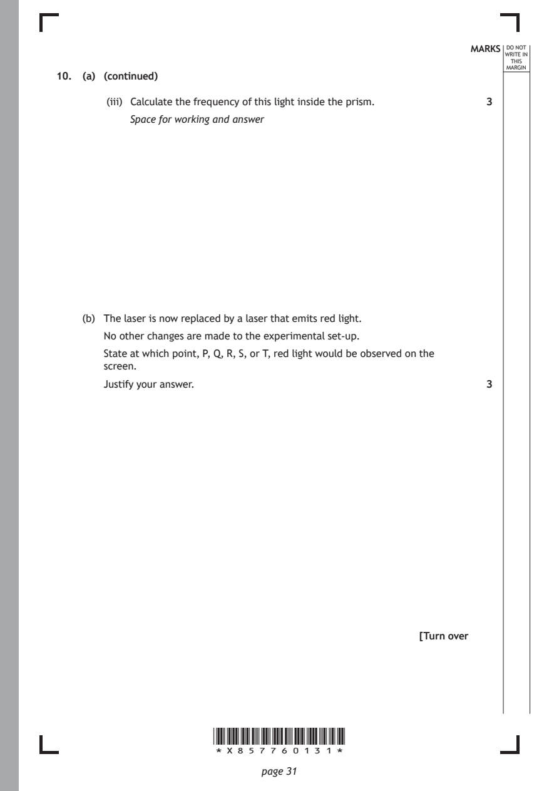
Selectable page text
MARKS _{W}^{D}_{R}^{O}_{I} _{T}^{N}OT
E IN
THIS
MARGIN
10. (a) (continued)
(iii) Calculate the frequency of this light inside the prism. 3
Space for working and answer
(b) The laser is now replaced by a laser that emits red light.
No other changes are made to the experimental set‑up.
State at which point, P, Q, R, S, or T, red light would be observed on the
screen.
Justify your answer. 3
[Turn over
*X857760131*
page 31PDF page 32
Paper 2, Question 11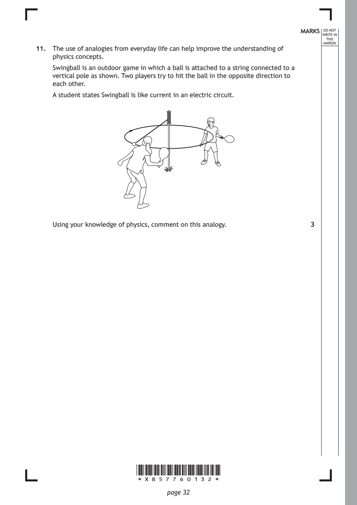
Selectable page text
MARKS _{W}^{D}_{R}^{O}_{I} _{T}^{N}OT
E IN
THIS
MARGIN
11. The use of analogies from everyday life can help improve the understanding of
physics concepts.
Swingball is an outdoor game in which a ball is attached to a string connected to a
vertical pole as shown. Two players try to hit the ball in the opposite direction to
each other.
A student states Swingball is like current in an electric circuit.
Using your knowledge of physics, comment on this analogy. 3
*X857760132*
page 32PDF page 33
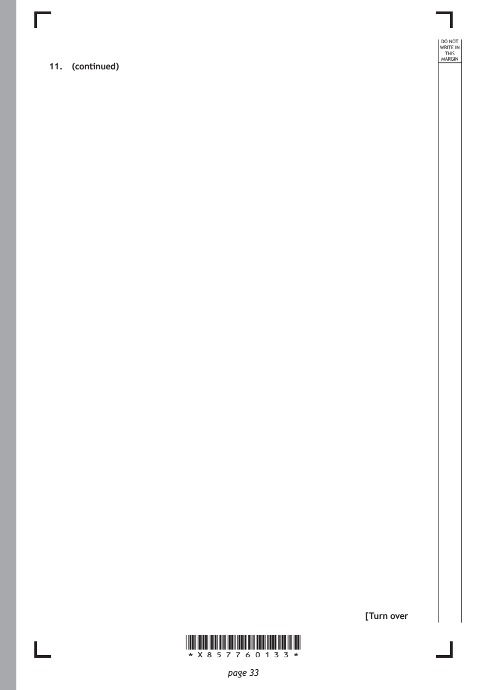
Selectable page text
DO NOT
WRITE IN
THIS
MARGIN
11. (continued)
[Turn over
*X857760133*
page 33PDF page 34
Paper 2, Question 12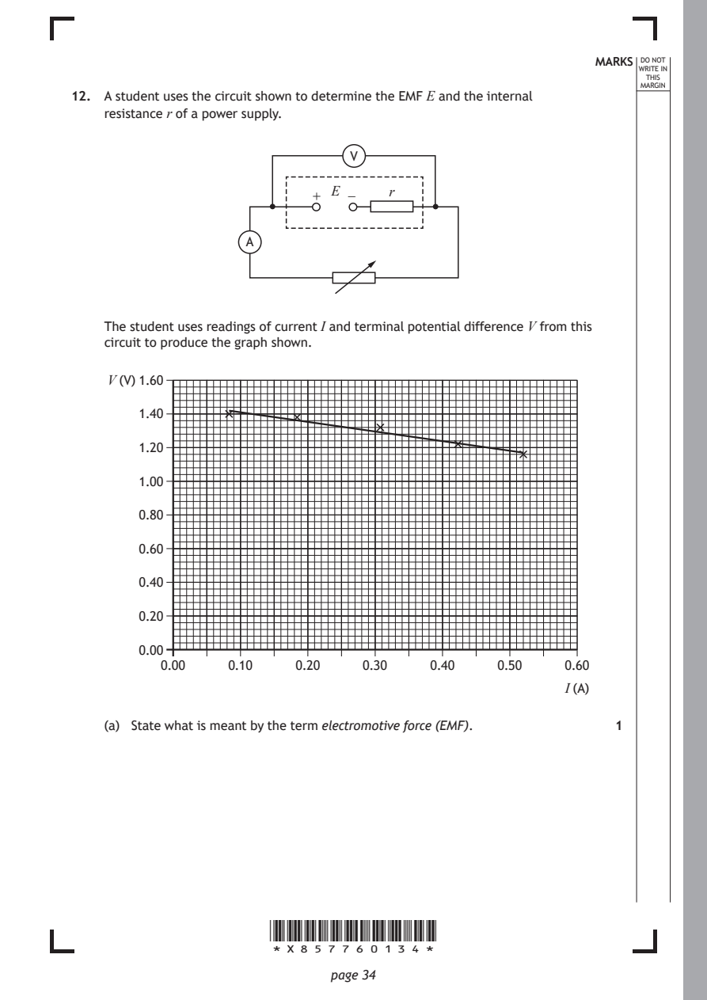
Selectable page text
MARKS _{W}^{D}_{R}^{O}_{I} _{T}^{N}OT
E IN
THIS
MARGIN
12. A student uses the circuit shown to determine the EMF E and the internal
resistance r of a power supply.
V
*X857760134*
page 34
+ E − r
A
The student uses readings of current I and terminal potential difference V from this
circuit to produce the graph shown.
V (V)1.60
1.40
1.20
1.00
0.80
0.60
0.40
0.20
0.00
0.00 0.10 0.20 0.30 0.40 0.50 0.60
I (A)
(a) State what is meant by the term electromotive force (EMF). 1PDF page 35
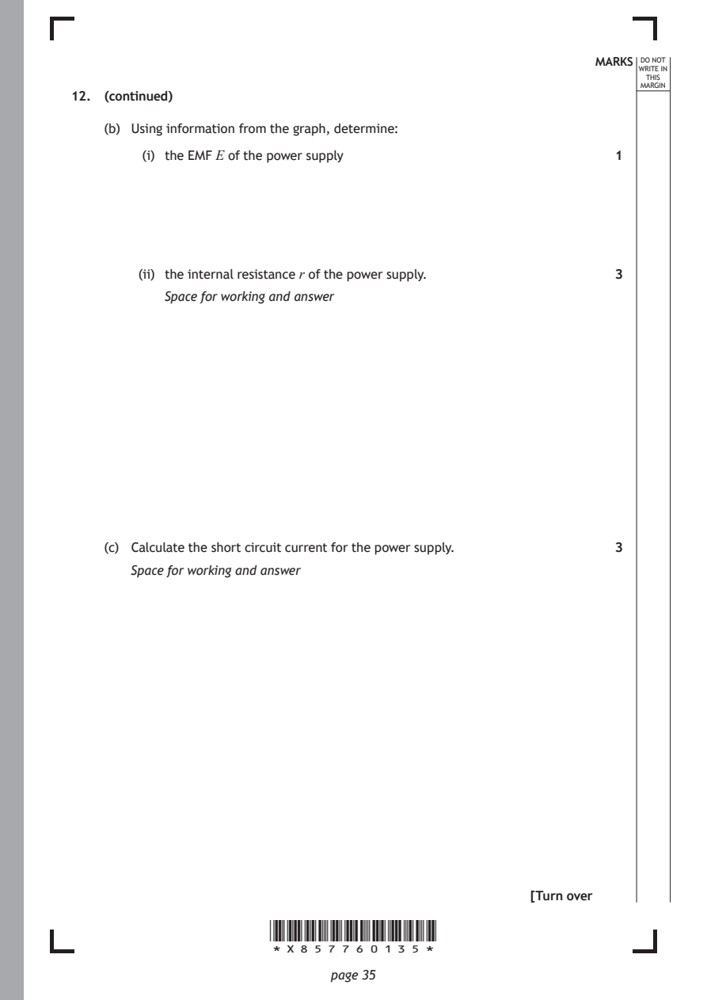
Selectable page text
MARKS _{W}^{D}_{R}^{O}_{I} _{T}^{N}OT
E IN
THIS
MARGIN
12. (continued)
(b) Using information from the graph, determine:
(i) the EMF E of the power supply 1
(ii) the internal resistance r of the power supply. 3
Space for working and answer
(c) Calculate the short circuit current for the power supply. 3
Space for working and answer
[Turn over
*X857760135*
page 35PDF page 36
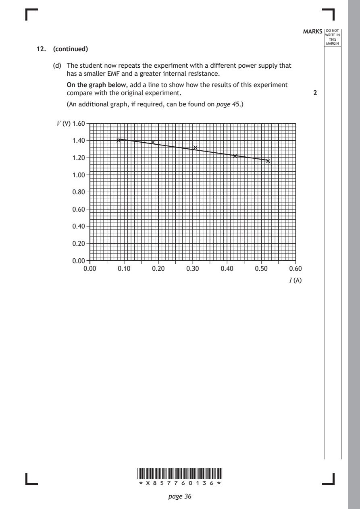
Selectable page text
MARKS _{W}^{D}_{R}^{O}_{I} _{T}^{N}OT
E IN
THIS
MARGIN
12. (continued)
(d) The student now repeats the experiment with a different power supply that
has a smaller EMF and a greater internal resistance.
On the graph below, add a line to show how the results of this experiment
compare with the original experiment. 2
(An additional graph, if required, can be found on page 45.)
V (V)1.60
1.40
1.20
1.00
0.80
0.60
0.40
0.20
0.00
0.00 0.10 0.20 0.30 0.40 0.50 0.60
I (A)
*X857760136*
page 36PDF page 37
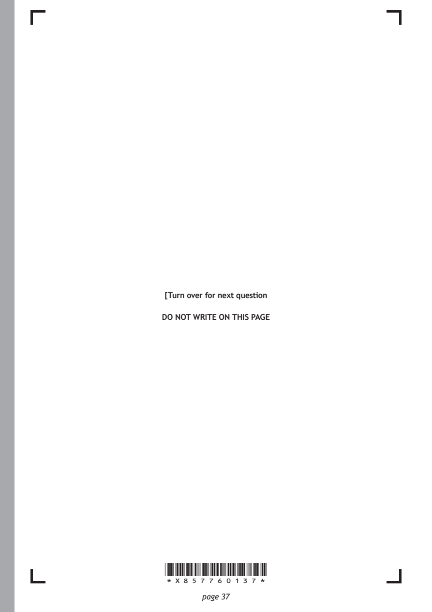
Selectable page text
[Turn over for next question
DO NOT WRITE ON THIS PAGE
*X857760137*
page 37PDF page 38
Paper 2, Question 13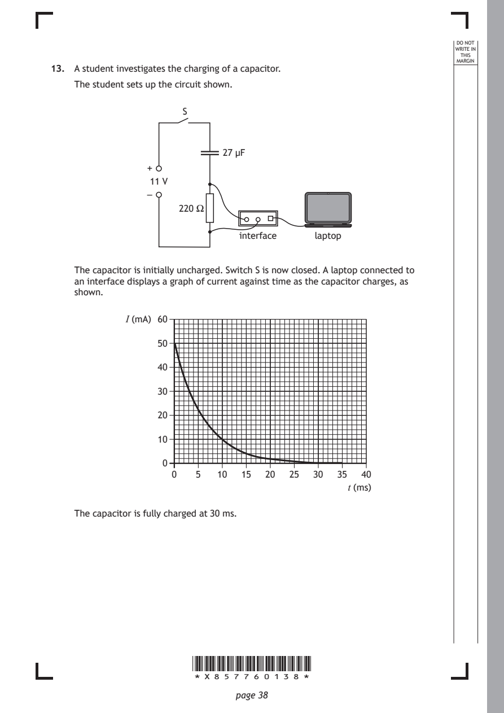
Selectable page text
DO NOT
WRITE IN
THIS
MARGIN
13. A student investigates the charging of a capacitor.
The student sets up the circuit shown.
S
27 μF
11 V
220 Ω
interface laptop
*X857760138*
page 38
+
–
The capacitor is initially uncharged. Switch S is now closed. A laptop connected to
an interface displays a graph of current against time as the capacitor charges, as
shown.
I (mA) 60
50
40
30
20
10
0
0 5 10 15 20 25 30 35 40
t (ms)
The capacitor is fully charged at 30 ms.PDF page 39
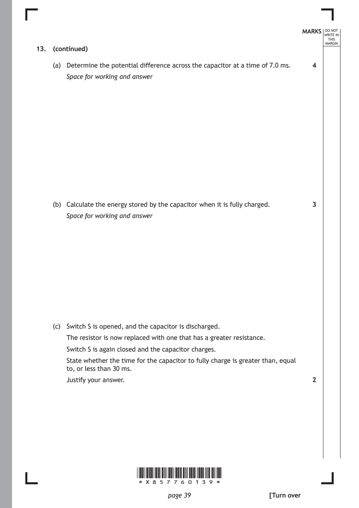
Selectable page text
MARKS _{W}^{D}_{R}^{O}_{I} _{T}^{N}OT
E IN
THIS
MARGIN
13. (continued)
(a) Determine the potential difference across the capacitor at a time of 7.0 ms. 4
Space for working and answer
(b) Calculate the energy stored by the capacitor when it is fully charged. 3
Space for working and answer
(c) Switch S is opened, and the capacitor is discharged.
The resistor is now replaced with one that has a greater resistance.
Switch S is again closed and the capacitor charges.
State whether the time for the capacitor to fully charge is greater than, equal
to, or less than 30 ms.
Justify your answer. 2
*X857760139*
page 39 [Turn overPDF page 40
Paper 2, Question 14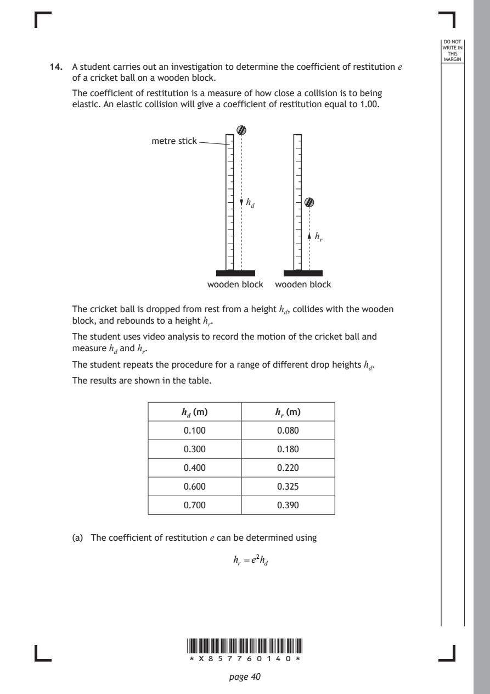
Selectable page text
DO NOT
WRITE IN
THIS
MARGIN
14. A student carries out an investigation to determine the coefficient of restitution e
of a cricket ball on a wooden block.
The coefficient of restitution is a measure of how close a collision is to being
elastic. An elastic collision will give a coefficient of restitution equal to 1.00.
metre stick
h_{d}
hᵣ
wooden block wooden block
The cricket ball is dropped from rest from a height h_{d}, collides with the wooden
block, and rebounds to a height hᵣ.
The student uses video analysis to record the motion of the cricket ball and
measure h_{d} and hᵣ.
The student repeats the procedure for a range of different drop heights h_{d}.
The results are shown in the table.
h_{d} (m) hᵣ (m)
0.100 0.080
0.300 0.180
0.400 0.220
0.600 0.325
0.700 0.390
(a) The coefficient of restitution e can be determined using
hᵣ =e²h_{d}
*X857760140*
page 40PDF page 41
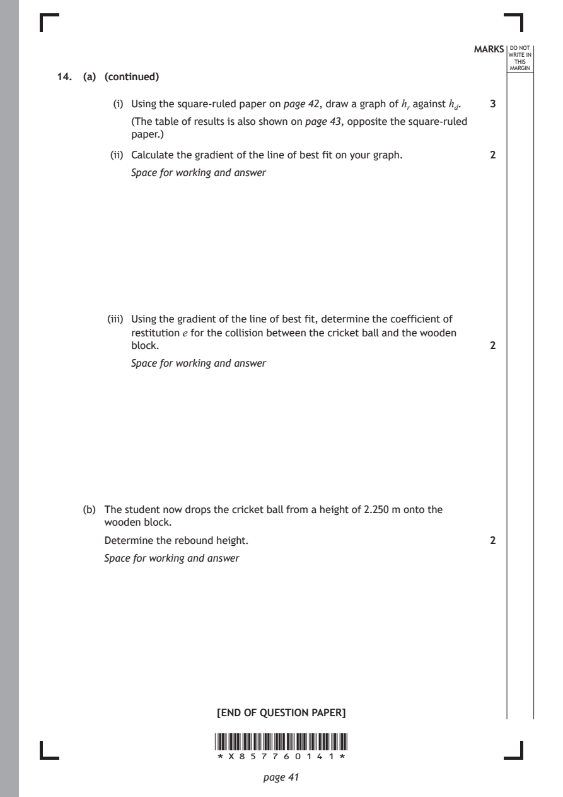
Selectable page text
MARKS _{W}^{D}_{R}^{O}_{I} _{T}^{N}OT
E IN
THIS
MARGIN
14. (a) (continued)
(i) Using the square‑ruled paper on page 42, draw a graph of hᵣ against h_{d}. 3
(The table of results is also shown on page 43, opposite the square‑ruled
paper.)
(ii) Calculate the gradient of the line of best fit on your graph. 2
Space for working and answer
(iii) Using the gradient of the line of best fit, determine the coefficient of
restitution e for the collision between the cricket ball and the wooden
block. 2
Space for working and answer
(b) The student now drops the cricket ball from a height of 2.250 m onto the
wooden block.
Determine the rebound height. 2
Space for working and answer
[END OF QUESTION PAPER]
*X857760141*
page 41PDF page 42
Selectable page text
*X857760142*
page 42PDF page 43
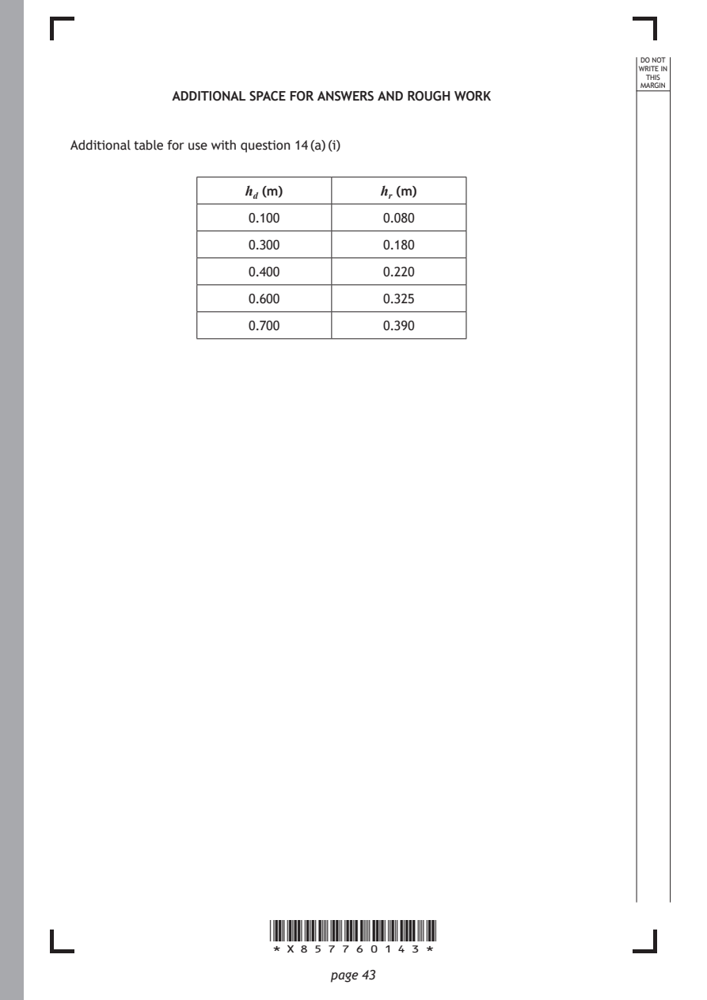
Selectable page text
DO NOT
WRITE IN
THIS
MARGIN
ADDITIONAL SPACE FOR ANSWERS AND ROUGH WORK
Additional table for use with question 14 (a) (i)
h_{d} (m) hᵣ (m)
0.100 0.080
0.300 0.180
0.400 0.220
0.600 0.325
0.700 0.390
*X857760143*
page 43PDF page 44
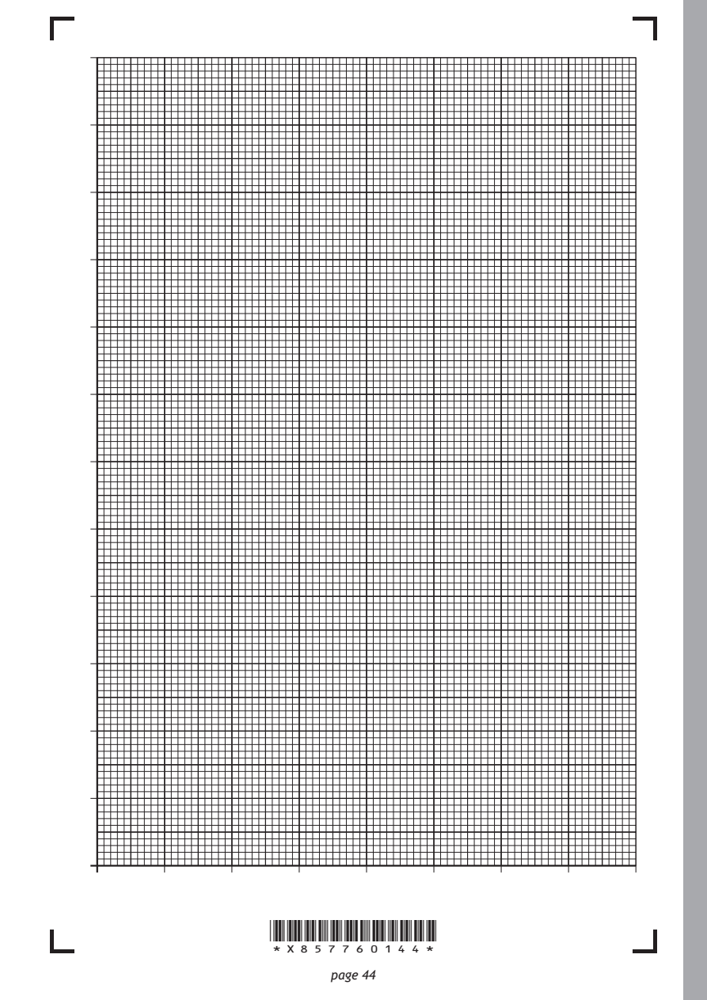
Selectable page text
*X857760144*
page 44PDF page 45
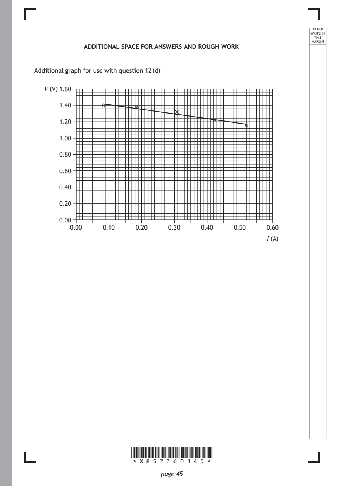
Selectable page text
DO NOT
WRITE IN
THIS
MARGIN
ADDITIONAL SPACE FOR ANSWERS AND ROUGH WORK
Additional graph for use with question 12 (d)
V (V)1.60
1.40
1.20
1.00
0.80
0.60
0.40
0.20
0.00
0.00 0.10 0.20 0.30 0.40 0.50 0.60
I (A)
*X857760145*
page 45PDF page 46
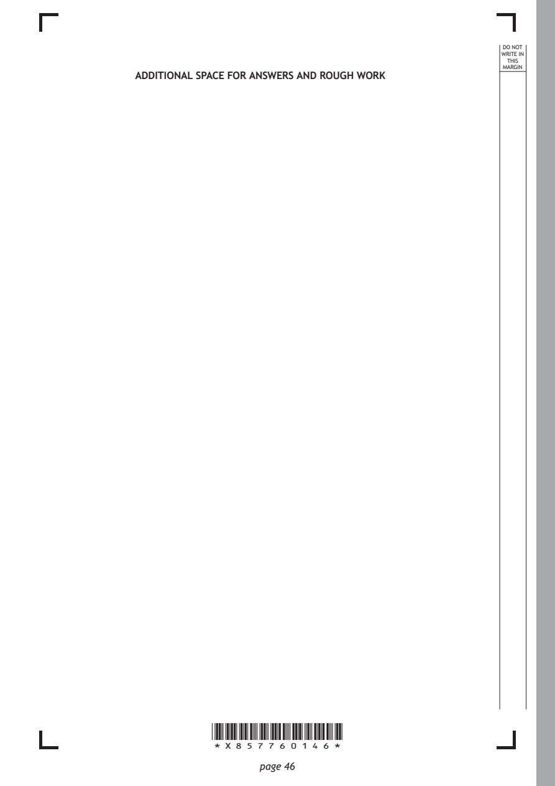
Selectable page text
DO NOT
WRITE IN
THIS
MARGIN
ADDITIONAL SPACE FOR ANSWERS AND ROUGH WORK
*X857760146*
page 46PDF page 47
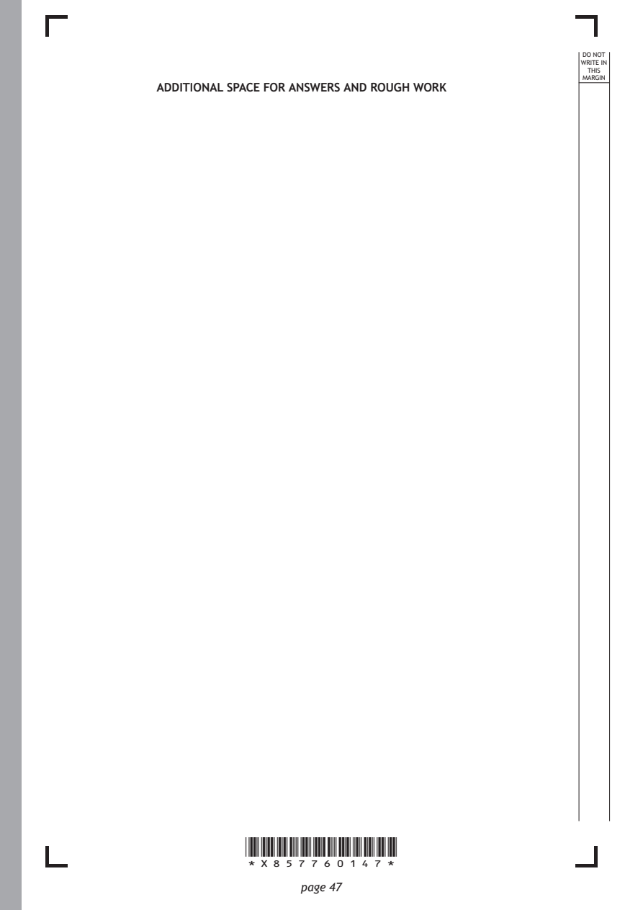
Selectable page text
DO NOT
WRITE IN
THIS
MARGIN
ADDITIONAL SPACE FOR ANSWERS AND ROUGH WORK
*X857760147*
page 47PDF page 48
Selectable page text
[BLANK PAGE]
DO NOT WRITE ON THIS PAGE
*X857760148*
page 48